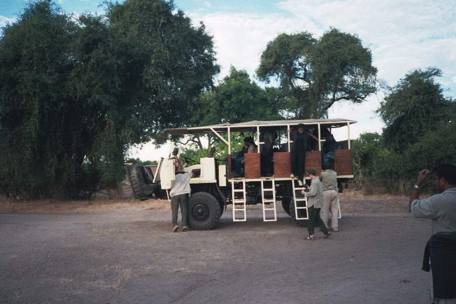

|
|
|
|
Yesterday we arrived here, late night, not too late, but it was dark. The boat house that we were supposed to stay in, turned out to be an old boat put on a cement block on the land. It's basically a two story construction, or rather shack. The people were still looking for a key for the bottom room (something just dropped on me a drop of something, probably an animal poop a very small one) door when we arrived. After trying about 40 keys they said they could not find a match, and so they installed a new lock, after Aneesh made the point clear that we had to have a lock on the door. Now the lock they put in, I don't know where they got it from. Probably it was one that they removed from another door. But at the end all was good and we got a semi working door. I mean it works great, only a little too much friction on the handle and the... Chama is calling for the fire now. I gotta go..
Today we started with a 6am safari through the Chobe national park. It was very interesting. We had a huge truck with huge wheels, that looked like a minimoog. It was four hours of driving around and we saw elephants, lions, antelopes, various birds. Then we had a cup of instant coffee on a beach, where Hippos came, or actually rested on the other side of the Chobe river. Then we came back, had some lunch based on ramen and canned vegetables and scrambled eggs. Then we went on the sunset cruise on a boat that was all metal with 2 small engines on the back a raft, basically. That kept going for a good 3 hours, from 3-6 then around 6pm I really had to go to the bathroom. But I was not aware of any bathrooms on the raft. And in fact, there was nothing on the raft but chairs.. I then was told by Mani that there was a bathroom on board. That was very nice for me So I drank a little more.
Then, when we came back, we went to have a buffet. At 7pm we started the buffet off by braking out a full, new bottle of sapphire gin, tequila and what and Rum. The buffet was great. Lots of meats, and vegetables. I ate raw vegetables. I forgot . Oh well..., we'll have to see how things go, ha?! the weather is still great.
Chama is now talking about making beer inside a pumpkin. Keep it in the hood with maze for 7 days then take it out mash it, then drain it, then put it in pumpkin for 2 days but I forgot the in-between. I did not quite understand the whole process. We are sitting around the campfire, I must be interested if I would ever make some friendship with some locals...
Chama is going for more liquor. Apparently, by tomorrow morning at 8:30 the minibus should be fixed. That is if Chama does not get too drunk tonight..
There is lots of animals, and lots of sounds. It really feels like this land is overpopulated. By living forms. There are lots of things one can't do here because of too many living beings. From as small as parasites and bacteria TO AS BIG AS A DEAR AS HIPPOS OR ELEPHANTS.
| Previous | Home | Next |